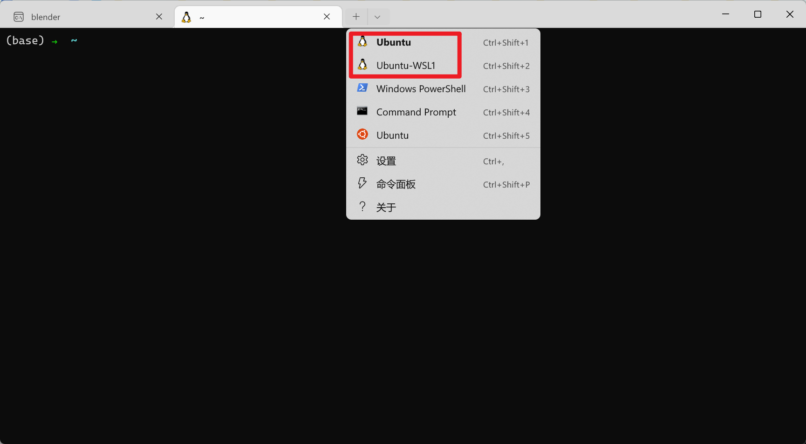
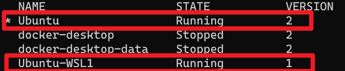

WSL的克隆，WSL1与WSL2的克隆共存
前言：WSL1和WSL2各有各的特点。WSL2支持GPU和外接USB硬件设备访问，效率也更高；但一旦涉及到Windows内部的文件系统访问，那只能说是慢的不能行，尤其是运行涉及到大量文件操作的脚本时。但是我用WSL很久了，也有了不少个性化设置，安装了很多Library。如果重头再来一遍，耗时耗力且可能某些内容与之前的环境不兼容。于是想法来了：能不能直接把已有的WSL克隆一份，并升级为WSL2，或者相反？
具体操作
导出已有的WSL Distribution到一个tar压缩包。
1
wsl --export <distribution name> <export file name>
例如如果你安装的是Ubuntu，想把它导出到当前目录，文件名为
ubuntu.tar，则：1
wsl --export Ubuntu ubuntu.tar
导出之后，自然就是导入了。选好导入后的压缩包准备解压的位置，然后：
1
wsl --import <new distribution name> <install location> <export file name>
如果你想给新的系统命名为
Ubuntu-WSL2,新WSL位置放.\Ubuntu-WSL2，则：1
wsl --import Ubuntu-WSL2 .\Ubuntu-WSL2 ubuntu.tar
值得一提的是，如果你想把新的克隆版也装到类似原本WSL的安装位置，这个位置在：
**%USERPROFILE%\AppData\Local\Packages\<distribution package name>\LocalState\ext4.vhdx**以Ubuntu为例，这个目录是：
%USERPROFILE%\AppData\Local\Packages\CanonicalGroupLimited.UbuntuonWindows_79rhkp1fndgsc\LocalState\ext4.vhdx导入完之后，必须要先运行一次，以把新的系统写入Windows Terminal的配置文件中。
1
wsl -d <new distribution name>
如：
1
wsl -d Ubuntu-WSL2

我这里是把WSL2作为Main，克隆后输出的WSL1，所以图示如上。
如果你的目的只是单纯的克隆一下WSL，那到第三步其实已经完成了。但如果你还想更改WSL版本，那么：
1
wsl --set-version <new distribution name> 2
这里的
2代表WSL2，如果你原本的WSL是WSL2，希望把克隆后的WSL版本降至1，那么把这里的2替换为1即可。如：1
wsl --set-version Ubuntu-WSL1 1
此时你会注意到，虽然登录进去了，但是你的user是root，不再是之前你自己的用户名。当然这个不需要慌，很容易就改了。
只需要在
/etc/wsl.conf文件中加上这样两行即可：1
2[user]
default=<YOUR_PREVIOUS_USERNAME>如果没有这个文件，创建一个该文件即可。
做完这步之后，你需要彻底关闭该WSL，重新进入后生效。
1
wsl --terminate Ubuntu-WSL1
另外，如果你不想要更改默认用户，但想要某次以该用户进入WSL，可以使用以下命令：
1
wsl -d Ubuntu-WSL1 -u <YOUR_PREVIOUS_USERNAME>
最后，如果你想查看确认当前安装的所有WSL系统版本：
1
wsl -l -v
有类似如下这两项说明已经成功：
